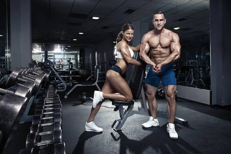

Mr.Tharanga Muthumal
As a certified Master Personal Trainer and Deputy Sheriff, Tharanga Muthumal has a full understanding of the anatomy and physiology of the body and what it needs to achieve her client's goals. With Tharanga's upbeat attitude and persistent drive to achieve success, she focuses on designing personalized workouts pertaining to his client's needs. He has a broad background in athletics and loves to incorporate various techniques such as a total body circuit training, kick boxing, and strength training, along with proper nutrition, to achieve your fitness goals.
With over 16 years of experience in fitness training, Tharanga has trained several collegiate athletes, sport specific young athletes, and clients wanting to lose weight. Tharanga has a proven track record of client satisfaction, retention, and results.

Mr.Dimanka Subasingha
Dimanka is a Nationally Qualified NPC Bodybuilder, a Fitness and Nutrition Coach, and Co-Owner of Health First Fitness Center. Dimanka’s main focus is helping clients instill healthy lifestyle habits that fit your daily routine. His coaching services include Flexible Dieting Protocols, Personalized Meal Plans, Reverse Dieting, Metabolic Repair, Nutrition Supplementation, Contest Prep, Custom Training Programs, and Personal Training Sessions.
Nationally Qualified NPC Competitor
Fitness & Nutrition Coach
Mrs.Sudarshi Withanage
As a certified personal trainer, Sudarshi has experience working with all fitness levels and ages. On top of being a trainer at HFFC, Sudarshi is the mom of 2 and has always been involved in sports which has followed her into a profession that she loves. She believes physical health is just as important as our mental health. Sudarshi hopes to change lives one pound at a time and build you to be stronger mentally.
~Certifications~
Expert Rating Global Personal Trainer
.png) Health First Fitness Center
Home
Events
Training
Schedule
What we do
Gallery
Shop
Contact Us
Health First Fitness Center
Home
Events
Training
Schedule
What we do
Gallery
Shop
Contact Us